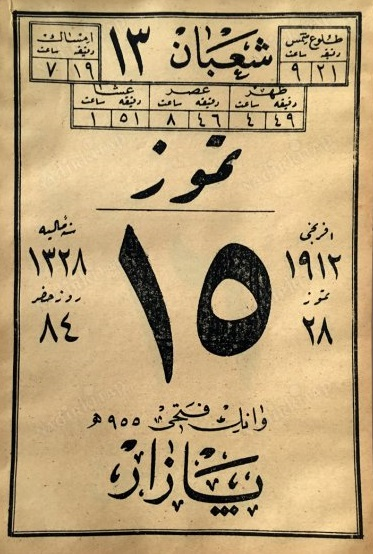
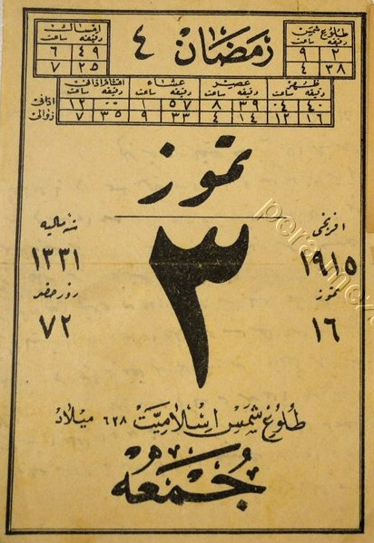
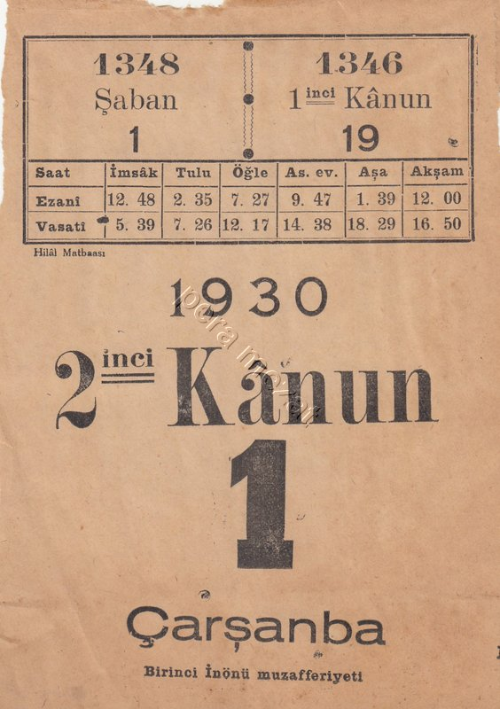
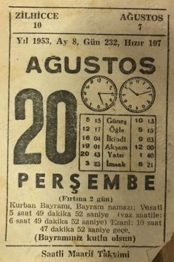
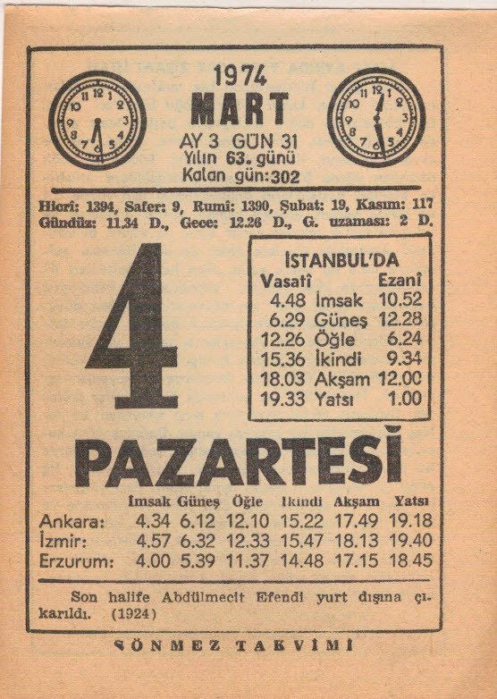
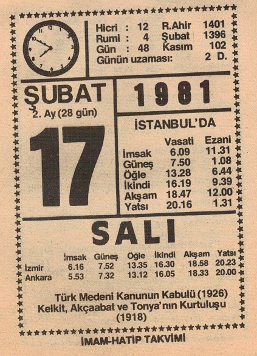

Güneş Saati (3/1/2021) sunumunda üç adet takvim yaprağı gösterirken
"1938'den öncesini bulamadım" demiştim. Yeğenim Celalettin bulmuş,
ek bilgilerle burada sunuyorum.
Tarihi bilgilerden çok, temkin zamanlarının değişimini göstermek asıl gaye.

1912-07-28
İmparatorluk dağılırken takvim de dağınık...
"Hangi yıldayız?" sorusunun üç cevabı var:
Geleceğin Avrupa olduğunu sezenler 1912 derken
Müslümanlar'a göre yıl 1330 (takvimde yok)
Resmi tarih ise (Rumi) 15 Temmuz 1328
Vasati saatler verilmediği için temkin süreleri hesaplanamadı.

1915-07-16
Üç sene sonra batıya doğru bir adım daha:
Ezani saatin altında Zevâlî saat var,
ayrıca Yatsıdan sonra "Akşam vakti" eklenmiş
(Ezani saate göre akşam her gün 12:00'de)

1915-07-16 (aynı yaprağın okunuşu)
Ezani saatin altında Zevâlî saat var,
ayrıca Yatsıdan sonra "Akşam vakti" eklenmiş

1930-11-01
Devrimlerden sonra çıkan bu yaprağın "1 Ocak" olduğunu bugün
anlamıyoruz. (Ref)
Resmi tarih Avrupa'ya uydurulmuş ama Rumi tarih hâlâ orada:
Hicri takvimden 2 yıl, Milâdi takvimden 13 gün geride.

1953-08-20
Çocukluğumuzda "iki saatli Maarif Takvimi" revaçta idi.
Saatler iki türlü vakte göre güneşin doğuşunu gösterir.
Alaturka saatin rakamları 1950'den önce yasak olan Arapça!

1974-03-04
Yine iki saat var ama artık Kuran harflerini bilenler
çok azaldığı için Alaturka saat bile yeni rakamlara dönmüş.

1981-02-17
Medeni Kanunun kabulünden 55 yıl sonra Rumi tarih
ve Ezani saatin hâlâ takvimde olmasına ne demeli?
Bunları kullanan kalmamıştı ama gelenek aynen sürüyordu.
Ref: Pera Mezat